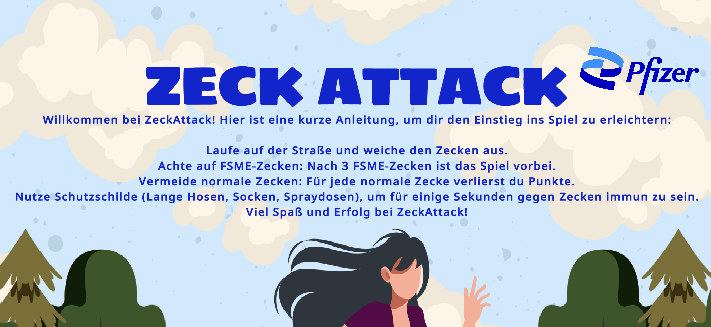
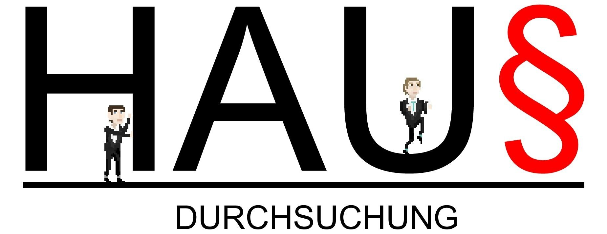
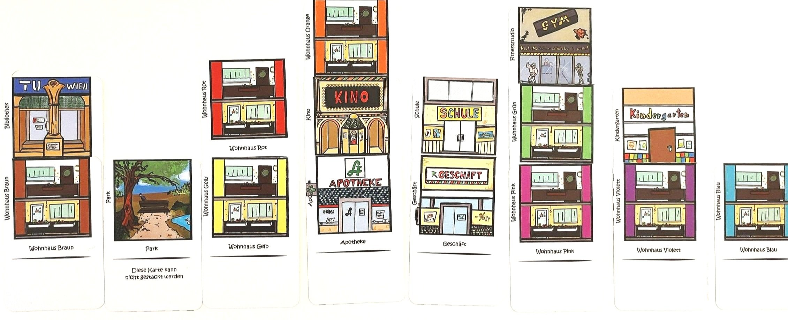

Research
I am currently pursuing my PhD at the
Participatory IT Design group at the University of Kassel.
There I am part of the research project Demokratie-X, which aims to analyse the
sustainability
of a privacy-focused, fair and public-interest-oriented platform for news distribution.
My research interests, in the context of my doctorate, revolve around the relationships between
people
and digital technologies. Especially interactions with AI (I passionately scorn this term) are
what
frequently make me frown.
Academic CV
Academic Services
- Full Paper AC 1 and 2 for Mensch und Computer 2025
- Tool Chair for Mensch und Computer 2025
- Reviewer for Oxford University Press' Interacting with Computers
- Reviewer for ACM Transactions on Computing Education(TOCE)
- Reviewer for CHI 26
- Reviewer for INTERACT 2025
- Helped create recommendations for the use of generative AI in a university setting for TU Wien
- Helped develop a course on the basics of generative AI for Mozarteum Salzburg
- Guest lecture ‘The Language of Bullshit Language – Big Tech's Promises on AI Regulation’ at Paris Lodron University Salzburg and TU Wien in the courses ‘Quantified Self’ and ‘Critical Theory of Media and Informatics’
- Guest lecture ‘AI in Education’ at TU Wien in the course ‘Critical Theory of Media and Informatics’
- Guest lecture ‘Foundation Models’ at Vilnius University in the course ‘AI Ethics’
Even more CV
The table and list above comprise my academic CV; for anyone interested in my other projects, coding skills or former jobs, a full CV is available here.
Game Design
Some of the games presented here were made in the course of game jams, some are university projects, some are contract work. Many were made in cooperation with others, which I make sure to mention here.
ZECK ATTACK
A simple browser jump&run game, created as contract work for Pfizer to promote their tick vaccination → click here to play
Hausdurchsuchung
A political game created in the course of a university project, dealing with the house search at the Austrian Minister of Finance's home.
Plan(See)Stadt
The aim of this card game was to familiarise players with urban planning. This goes hand in hand with various interests that are often inherently contradictory. A circumstance that was illustrated with role cards, which gave players specific tasks to fulfil, trying to facilitate putting oneself into different roles.
WobotkaVR
A two-player asymmetrical VR PVP game, one player drops packages on the other player's porch. Yet another political game, some might say about the same political party as Hausdurchsuchung.

Reflections on Academia
Throughout my PhD journey, I irregularly draw comics on my experience in Academia. These comics don’t reflect my current interests, ideas, opinion or even looks (e.g. I do wear glasses now). They are mere snapshots of what was going on in my head while at the stage of my PhD I was at when drawing them. Also, most likely, none of my coworkers or public figures that I depict in the comics are socks.
They are sorted most recent to I barely remember what I was trying to say.

Click here to see the comics
Contact
Reach out to me if you'd like to discuss my research projects – past or future – or want to
collaborate on something new. I'm also available to supervise student projects, Bachelor's or
Master's theses at the University of Kassel.
If you're looking for someone to develop a video game or a website such as this one, on a
contract basis, feel free to get in touch – I'd be happy to see if I'm available within your
timeframe.
Email: konstantin.lackner@uni-kassel.de
LinkedIn: Konstantin Lackner
GitHub: KonstantinLackner
itch.io: konstantinlackner